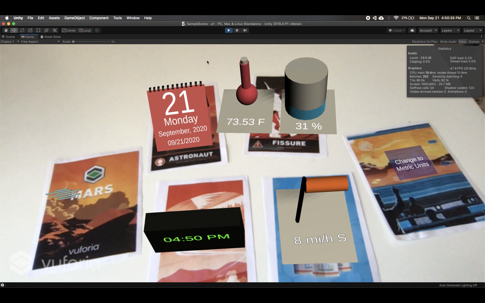
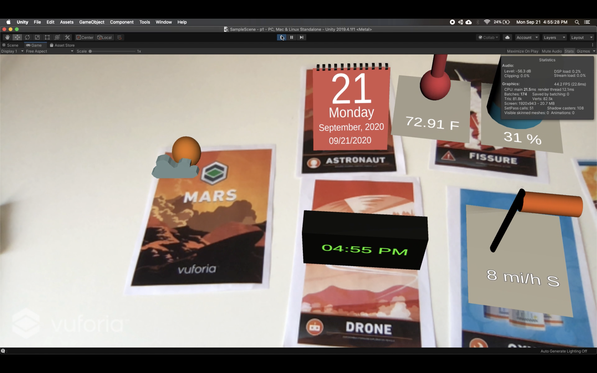
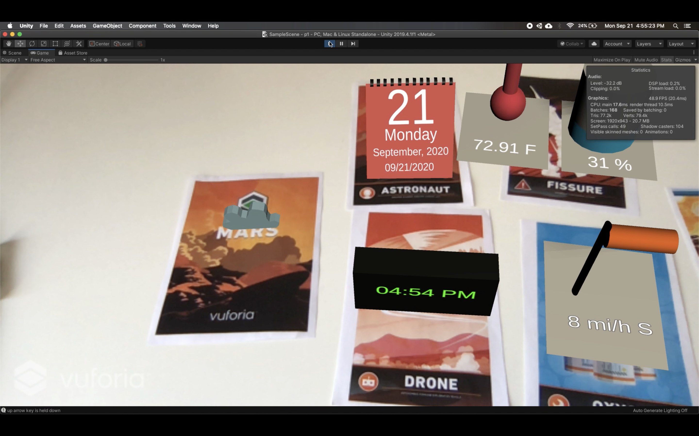
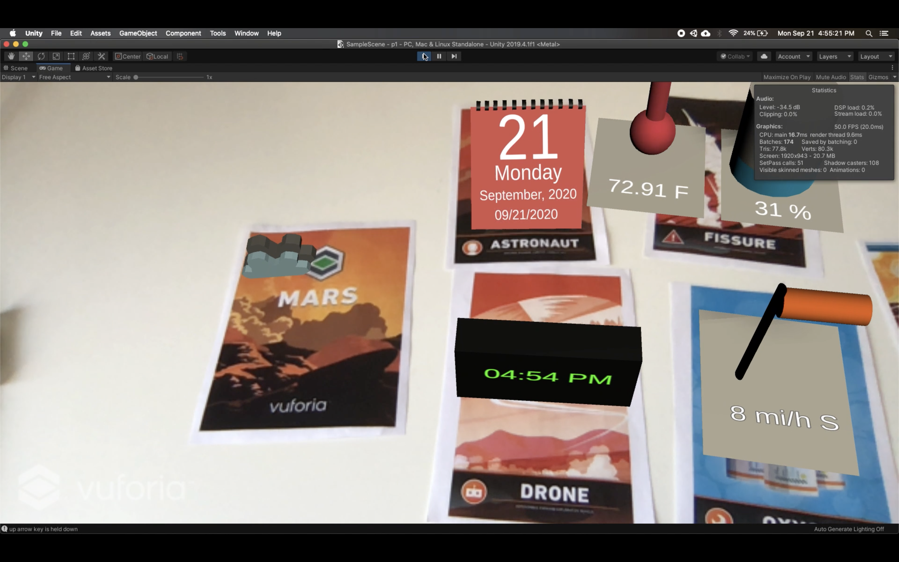
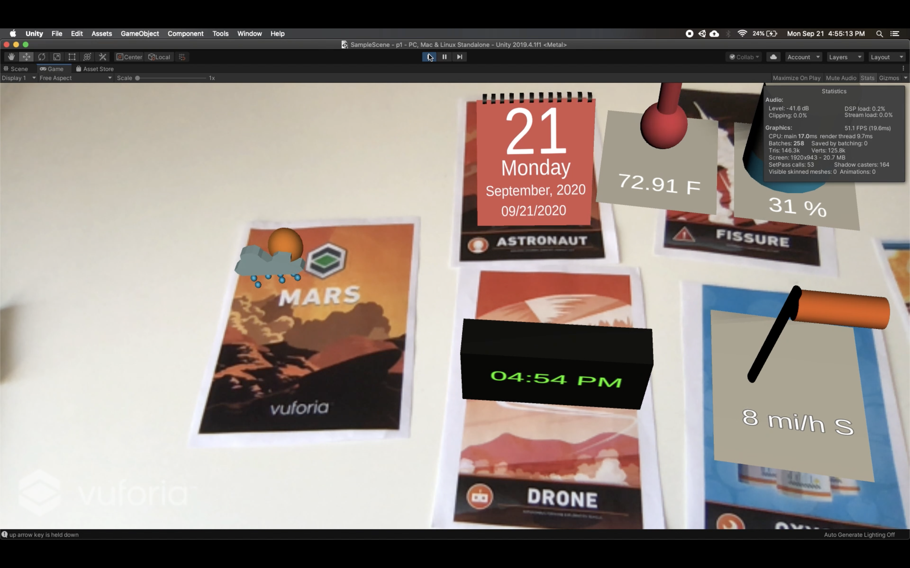
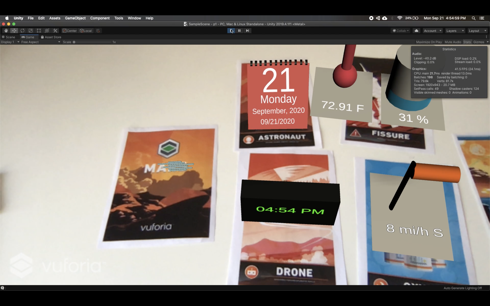
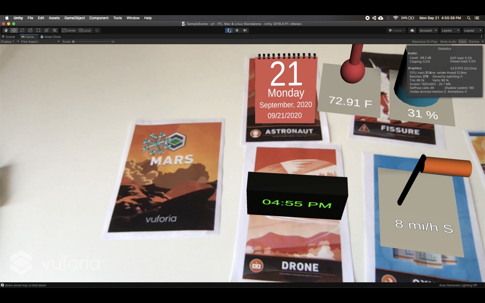
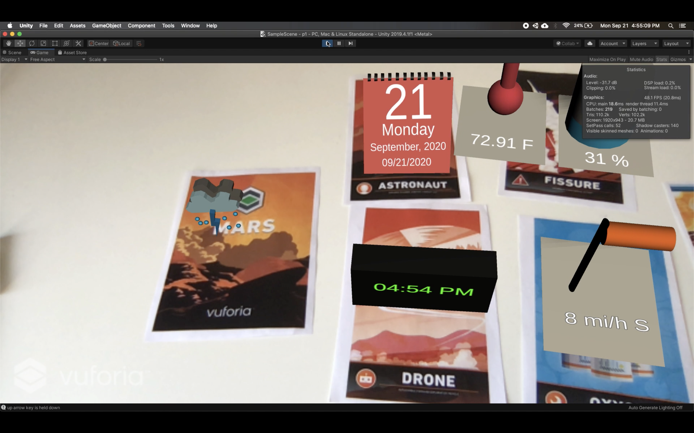
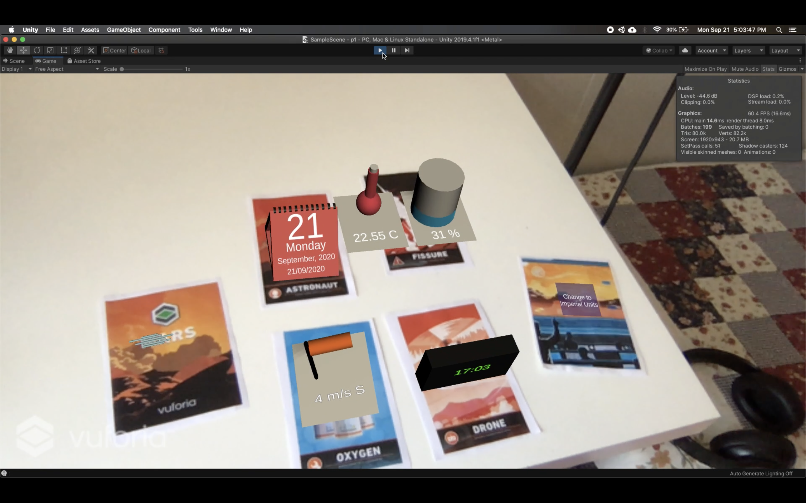

Project 1: Things will never be the same
Introduction
In this project we are exploring a bit and envisioning on how our future would look like with AR glasses and AR widgets lying around our houses. In olden times, we often had various widgets on our tables. From a clock to desk calendars, alarm clocks, thermometer etc.
But now our smartphones have replaced pretty much all of those devices. But what if they make a comeback in our Augmented Reality future? Smartphones replaced these traditional widgets because it was simply easier to just see the information on the phone. But with AR glasses, we can see information all around us, eliminating the use to take out our phones frequently. Things will never be the same, is it?
Taking a short step forward, in this project I have created a calendar, a clock, a thermometer, a humidity widget, and a wind sock that all show the current corresponding information. There's finally a 3D icon that displays the main condition like clear sky, raining, snowing, mist, etc. All of the icons have a unique looping sound that gets louder as you get closer to it.
By default, the data is displayed in imperial units, but what if you want to see it in metric units? Wait, don't take out your converter. All you have to do is press on 'Change to Metric Units'. You can press on the same button to go back to Imperial System.
Demo Video:
Source Code:Github
Tools Used:
Tools Used:
How to use:
- Please install the above mentioned versions of Unity and Vuforia
- Download the zip folder of the project from Github
- Open the project in Unity.
- If MacOs throws the error " “VuforiaWrapper.bundle” cannot be opened because the developer cannot be verified.", please follow the instructions here
- Go to Asset store, and ensure "JSON.net For Unity" is installed.
- The sample scene should already be in the hierarchy. If not, please drag it from Assets->Scenes.
- Start your webcam and press the play button.
Assets:
All widgets are created by me using Unity Primitives and Probuilder.
Sounds:
- Clear Sky: Soundbible
- Few Clouds: Soundbible
- Scattered Clouds: Soundbible
- Broken Clouds: Soundbible
- Rain: partnersinrhyme
- Shower Rain: partnersinrhyme
- Thunderstorm: partnersinrhyme
- Mist: zapsplat
- Snow: Soundbible
Screenshots:
All widgets showing data in imperial units. All the widgets can work simultaneously.
3D icon of 'Few clouds'
3D icon of 'Scattered clouds'
3D icon of 'Broken Clouds'
3D icon of 'Clear'
3D icon of 'Rain'
3D icon of 'Shower Rain'
3D icon of 'Mist' (1).
3D icon of 'Mist' (2). The two images show Mist icon's animation
3D icon of 'Snow' (1).
3D icon of 'Snow' (2). The two images show Snow icon's animation

3D icon of 'Thunderstorm' (1).
3D icon of 'Thunderstorm' (2). The two images show Thunderstorm icon's animation

Pressing Button 'Change to Metric Units' to change data from Imperial to Metric units.
Resultant view after pressing the button. All units are in metric. The button now says 'Change to Imperial Units'
Thoughts on using AR widgets in the future
Augmented Reality can completely change the world how we see it. The opportunities are ample and can be used in almost everything. We can just point our mobile phone (or just look at it with AR glasses) at anything we wish and see all the information we require.
In olden times, we often had various widgets on our tables. From a clock to desk calendars, alarm clocks, thermometer etc. But now our smartphones have replaced pretty much all of those devices. But what if they make a comeback in our Augmented Reality future? Smartphones replaced these traditional widgets because it was simply easier to just see the information on the phone. But with AR glasses, we can see information all around us, eliminating the use to take out our phones frequently. Things will never be the same, is it?
From the demo, it can already be seen how helpful they can get. I don't have to unlock my phone and check my weather application to check the weather. It was right on my table when I needed it. Not just temperature, it even let me know the humidity and wind direction and speed. So now if it's raining and I see the wind direction is such that the droplets may enter my room, I know to close it before the rain gets any heavier.
We can get beyond just weather. We know the trouble of getting our phones inside the shower. But hey I wanna listen to music while showering. In the future, I can just have the spotify widget open in front of me without the hassle of getting my smartphones wet. Or I am cooking and I want to see the recipe. I can quickly open the Google AR widget, search and get the results augmented in the space next to me. There can be widgets for light switches, AC switches, TV switches. No need to get out of your comfy blanket just to turn off the light. NO, NO, NO. We don't do that in our Augmented Reality future :D . I can be in my car driving to work and quickly open my to-do app's AR widget and review my tasks while driving. I can already imagine how much time that would save. Google Maps can have and also has in fact, an AR widget that augments the directions while navigating. One doesn't have to look at their phones while driving. Imagine a video calling widget? One tap on the 'air' and you are talking to your friend while cooking.
AR glasses bring a huge advantage with the fact that they are hands free! They will be much more realistic than our mobile apps, in the sense, you are not viewing them from a phone but looking at it through your eyes. Wearing glasses will also reduce the distractions and the accidents caused by the distractions drastically since you are not looking away to look at your phone. I think AR widgets with glasses will be a huge success in the future since it's basically all the power of a smartphone widget but more convenient, customizable in size, hands free and more immersive.